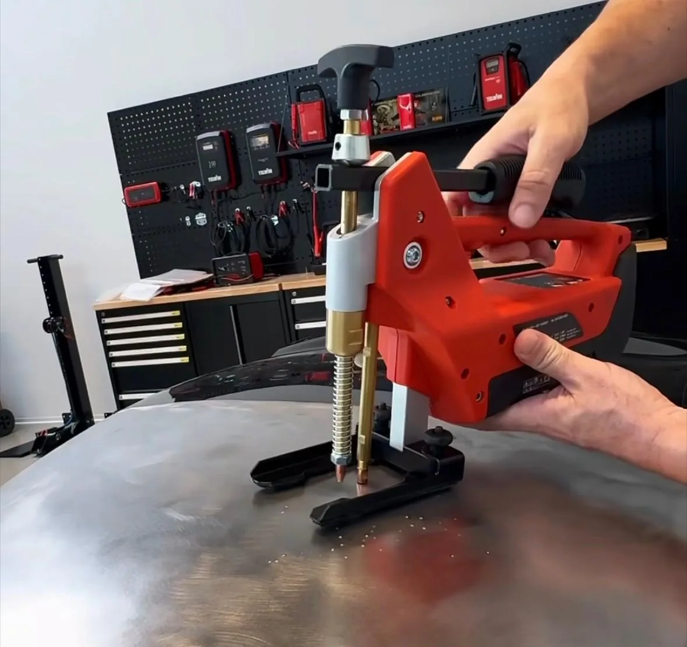
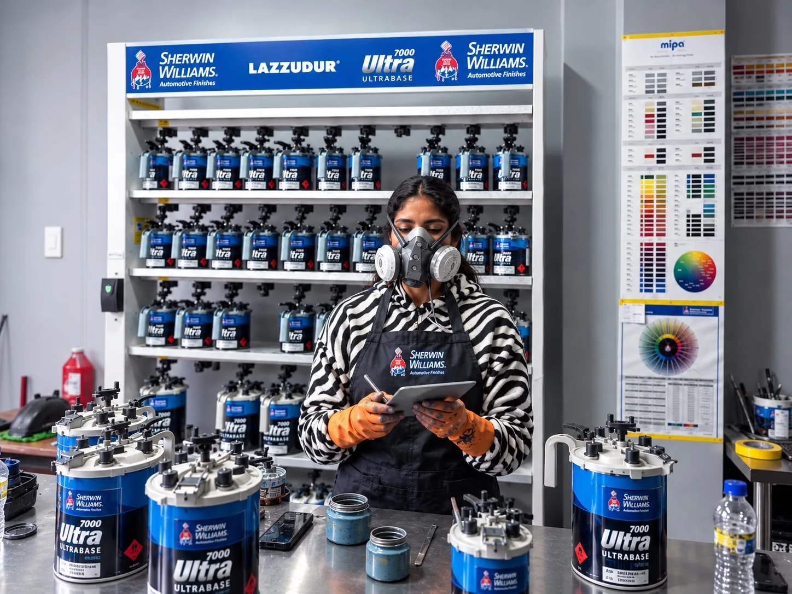
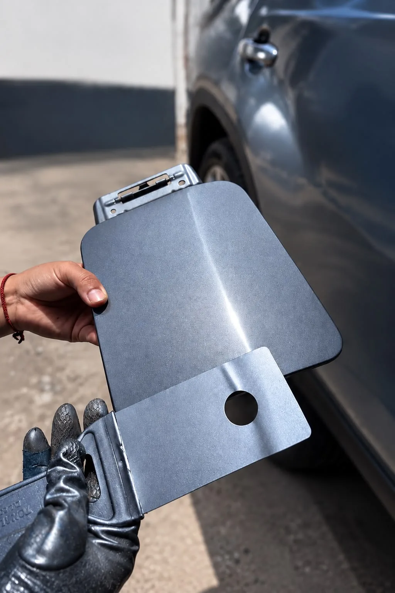
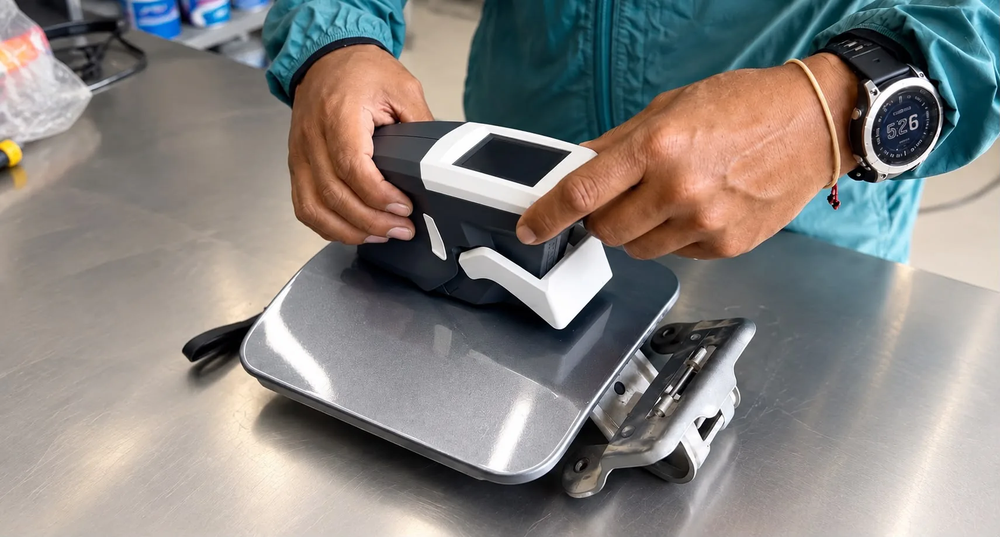
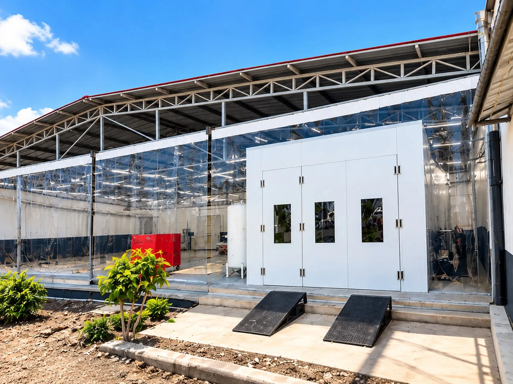

Pintura completa
Repintado integral de la carrocería con preparación, fondo, color y barniz con secado y sellado al horno.
Igualamos el color original con colorimetría y secamos en cabina de horno, pieza por pieza. Arma tu presupuesto en línea en 2 minutos — sin llamadas ni visitas previas.
Previsualiza el color
Referencia visual. El tono final se define por el código de color de tu vehículo.
Desde un raspón en una puerta hasta un cambio de color completo. Trabajamos por pieza, así pagas solo lo que necesitas.
Repintado integral de la carrocería con preparación, fondo, color y barniz con secado y sellado al horno.
Capó, puertas, guardafangos o parachoques por separado, con difuminado para que el color calce con el resto.
Enderezado de golpes y abolladuras antes de pintar, para que la superficie quede recta y no se marque bajo la luz.
Reparación puntual de rayones profundos y roces de estacionamiento sin repintar todo el vehículo. Si el daño es pequeño, te devolvemos el auto en el día.
Recuperación del brillo en pintura opacada por el sol, con corrección de micro rayas y sellado.
Personalización completa de tonalidad, incluyendo acabados perlados y mate, con registro fotográfico del proceso.

El presupuesto se arma en línea. Recién cuando lo apruebas coordinamos la entrega del vehículo.
Marca, modelo, año y placa. Con eso reconocemos la carrocería y su cálculo de superficie.
Económico, profesional o alta gama, según el nivel de preparación y los materiales.
Sobre un modelo 3D de la carrocería de tu vehículo, tocas exactamente lo que quieres pintar o reparar, y ves el precio estimado al instante.
Te contactamos en 24 horas con el precio cerrado y la fecha de entrega.
Todos incluyen preparación y pintura profesional. La diferencia está en el nivel de detalle y en los materiales.
Desde S/ 250 por pieza
Para devolverle el aspecto al auto rápido y sin gastar de más.
Desde S/ 300 por pieza
Acabado superior y color exacto, por un precio justo.
Desde S/ 400 por pieza
El estándar de fábrica, para el auto que no admite un tono aproximado.
Si pintas varias piezas en el mismo trabajo, te descontamos un porcentaje del total, en cualquier nivel de acabado. Lo ves aplicado en tu cotización en línea.
Los precios mostrados son referenciales por pieza, antes del descuento por varias piezas. El presupuesto final depende del estado de la pieza, el tipo de vehículo y el color.

El brillo que se ve al recoger el vehículo lo define lo que pasó antes: el enderezado, el lijado, el fondo y el control del polvo dentro de la cabina. Ahí es donde ponemos el tiempo. Más de 15 años en el sector automotriz en Europa nos enseñaron lo que vale la movilidad de cada cliente: por eso respetamos el precio que acordamos y la fecha de entrega que te damos.


El pintado en sí es rápido porque se hace al horno: un pintado general con acabado de fábrica toma 4 horas de cabina, y una pieza suelta —una puerta, un capó— 2 horas. Con Fast Repair entregamos el vehículo el mismo día cuando el daño es pequeño.
A eso se suma la preparación, y el planchado si hace falta, que es lo que cambia según el estado de cada vehículo. La fecha exacta de entrega te la damos junto con el presupuesto, y no cambia salvo que aparezca un daño oculto.
Partimos del código de color de fábrica de tu vehículo y ajustamos la mezcla con pruebas sobre probeta antes de aplicar. En piezas contiguas usamos difuminado para que la transición no se note, incluso en colores perlados o metalizados, que son los más difíciles de igualar.
Es un lector óptico que mide la luz que refleja la pintura de tu vehículo y devuelve la fórmula del tono, con sus partículas metalizadas o perladas. No depende del ojo del pintor ni de un catálogo impreso.
También mide cuánto ha cambiado el color con los años de sol, así que la mezcla se ajusta al tono que el auto tiene hoy y no al que tenía al salir de fábrica. Lo usamos en los acabados Profesional y Alta gama.
No. La cotización en línea se arma marcando las piezas sobre un modelo 3D y toma unos dos minutos. Solo pedimos ver el vehículo si el daño requiere planchado, para confirmar el alcance antes de cerrar el precio.
La acrílica seca por evaporación del thinner. Es más barata y fácil de aplicar, y al principio se ve bien, pero resiste menos el sol, los químicos y los rayones, y pierde brillo antes.
El uretano son dos componentes, pintura o barniz más catalizador, que curan por reacción química: queda más duro, conserva el brillo y aguanta el clima. Exige control de temperatura y de polvo, por eso se aplica en cabina. Nosotros trabajamos solo con uretano, en los tres niveles de acabado.
No conviene. Si abajo queda algo de solvente sin evaporar, los solventes más pesados del uretano lo levantan: la capa inferior se ablanda y el acabado se arruga, burbujea o se cuartea.
Aunque salga bien del taller, la adherencia falla con el tiempo y el barniz termina descascarándose con el sol. Por eso respetamos el sistema completo, desde la base hasta el barniz.
Al sol la chapa se calienta de golpe: los solventes evaporan demasiado rápido arriba y atrapan humedad abajo, y aparecen burbujas, piel de naranja y pérdida de brillo a los pocos meses. El viento, además, deja polvo, pelusa e insectos sobre el barniz fresco.
La cabina filtra el aire y reparte el calor a temperatura controlada, así que el barniz estira parejo y cura en minutos en vez de días. En metalizados y perlados es lo que permite que las partículas se acomoden sin dejar manchas ni sombras.
Nuestros matizados y colores tienen 5 años de garantía, que entregamos por escrito junto con el comprobante. La condición es que se respete todo el proceso que indica Sherwin Williams: una sola marca desde la preparación hasta la pintura y el barniz.
Cubre lo que viene del trabajo o del material: que el brillo se opaque antes de tiempo, que el barniz se descascare o que broten burbujas semanas después.
No cubre daños externos: rayones, choques, la contaminación de resinas de plantas o excremento de aves que caen sobre la pintura, ni el desgaste de lavados con detergente de ropa o con rodillos.
Porque el ahorro está en lo que no se ve: masilla de más en lugar de planchar la lata, barniz económico diluido para que rinda, y secado al aire libre. El auto sale brillante y con el sol de Ayacucho se opaca o se amarillea en pocos meses.
Rehacerlo después sale más caro que hacerlo bien, porque no se puede pintar encima: hay que retirar toda esa pintura hasta la lata antes de empezar.
Aceptamos efectivo, Yape y transferencia bancaria.
Arma tu presupuesto en línea o escríbenos directamente. Te respondemos dentro del horario de taller.
